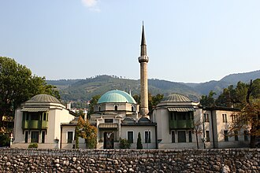

Giới thiệu
La mosquée impériale est située en Bosnie-Herzégovine, sur le territoire de la Ville de Sarajevo. Construite en 1565, elle est inscrite sur la liste des monuments nationaux de Bosnie-Herzégovine. Elle est la première mosquée construite à Sarajevo.
مسجد الإمبراطور(بالبوسنوية: Careva Džamija, بالتركية: Hünkâr Camii) هو أحد المعالم المهمة في سراييفو عاصمة البوسنة والهرسك؛ حيث أنه أول مسجد بُني فيها، وذلك عام 1457 بعد الفتح العثماني للبوسنة والهرسك. ويُعد المسجد أكبر مسجد ذي قبة منفردة في البوسنة والهرسك، مبنيٌّ وفق الطراز العثماني التقليدي لذلك العهد.
The Emperor's Mosque is a mosque in Sarajevo, Bosnia and Herzegovina. Completed in 1457 CE, it was the first mosque built after the Ottoman conquest of Bosnia. Built in the classical Ottoman style, it is the largest single-subdome mosque in the country.
Hünkâr Camii veya Fatih Sultan II. Mehmet Camii, Bosna-Hersek'in başkenti Saraybosna'da yer alan ve 1457 yılında yapılan Osmanlı dönemi camilerindendir.
مسجد شہنشاہ سرائیوو، بوسنیا و ہرزیگوینا میں ایک اہم تاریخی مقام ہے۔ یہ بوسنیا کی عثمانی فتح کے بعد تعمیر ہونے والی پہلی مسجد ہے جو 1457 میں تعمیر کی گئی۔
Die Kaisermoschee von Sarajevo ist die zweitwichtigste Moschee der Stadt. Sie liegt außerhalb des Stadtzentrums am linken Ufer der Miljacka.
La moschea dell'imperatore è un importante punto di riferimento di Sarajevo, Bosnia ed Erzegovina, essendo la prima moschea costruita (1457) dopo la conquista ottomana della Bosnia. È la più grande moschea costruita con una singola cupola in Bosnia ed Erzegovina, costruita secondo lo stile ottomano classico dell'epoca.
De Keizermoskee is na de Gazi-Husrev-Begmoskee de belangrijkste moskee in Sarajevo. Ze ligt net buiten het stadscentrum aan de linkeroever van de rivier de Miljacka, een zijrivier van de Bosna.
Царёва мече́ть — самая старая мечеть в Сараеве, Босния и Герцеговина. Мечеть назвали в честь султана Сулеймана I.
มัสยิดจักรพรรดิ เป็นสถานที่สำคัญในซาราเยโว ประเทศบอสเนียและเฮอร์เซโกวีนา, สร้างขึ้นในปี 1457 เป็นมัสยิดแรกนับตั้งแต่บอสเนียถูกออตโตมันปกครอง และเป็นมัสยิดโดมย่อยเดี่ยวที่ใหญ่ที่สุดในประเทศ มัสยิดสร้างขึ้นด้วยสถาปัตยกรรมแบบออตโตมัน มัสยิดสร้างขึ้นเพื่อระลึกถึงจักรพรรดิสุลต่านเมห์เม็ดแห่งคอนสแตนติโนเปิล
Trên bản đồ
Tài liệu và đường dẫn
- Wikipédia — Français
- Wikipédia — العربية
- Wikipédia — English
- Wikipédia — Türkçe
- Wikipédia — اردو
- Wikipédia — Deutsch
- Wikipédia — Italiano
- Wikipédia — Nederlands
- Wikipédia — 中文
- Wikipédia — Русский
- Wikipédia — ไทย
- Wikidata — Q1628496
Dữ liệu: Wikidata (CC0), cập nhật 3 tháng một lần. Năm là niên đại xây dựng sớm nhất được biết của công trình: với một công trình về sau mới trở thành thánh đường (như Hagia Sophia), đó là năm của công trình ban đầu. Ảnh: Wikimedia Commons, tác giả và giấy phép ở trang của từng ảnh.